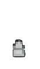

LES ARMES
Il existe une variété astronomique d'armes dans Hunt Showdown, vous trouverez ici leurs statistiques et un visuel de celles-ci. Elles peuvent se débloquer via la lignée au fur et à mesure où l'on passe des rangs. Pour les variantes des armes en elle-même, elles se débloquent en jouant avec celle de base, en engrangeant de l'XP.
La distance parcourue par le projectile lorsqu'il tombe n'aura pas assez d'effet pour perturber votre visée.
Portée effective 20 mValeur des dégâts d'une attaque de mêlée régulière frappant un chasseur dans la partie supérieure du torse.
Dégâts de mélée 13Valeur des dégâts d'une attaque de mêlée lourde chargée frappant un chasseur dans la partie supérieure du torse.
Dégâts lourds de mêlée 27
Couteau
Un outil universel et une arme de mêlée qui a sauvé de nombreuses vie - et en a pris autant.Une évaluation abstraite de l'efficacité en tenant compte du balancement de l'arme, du recul et de la dispersion des balles. Pour les armes de mêlée, cela tient compte de la consommation d'endurance, de la portée et de l'angle d'attaque. Plus le pourcentage est élevé, meilleur est le maniement de l'arme.
Maniement 57%Valeur des dégâts d'une attaque de mêlée régulière frappant un chasseur dans la partie supérieure du torse.
Dégâts de mélée 52Valeur des dégâts d'une attaque de mêlée lourde chargée frappant un chasseur dans la partie supérieure du torse.
Dégâts lourds de mêlée 105
Une évaluation abstraite de l'efficacité en tenant compte du balancement de l'arme, du recul et de la dispersion des balles. Pour les armes de mêlée, cela tient compte de la consommation d'endurance, de la portée et de l'angle d'attaque. Plus le pourcentage est élevé, meilleur est le maniement de l'arme.
Maniement 45%Valeur des dégâts d'une attaque de mêlée régulière frappant un chasseur dans la partie supérieure du torse.
Dégâts de mélée 72Valeur des dégâts d'une attaque de mêlée lourde chargée frappant un chasseur dans la partie supérieure du torse.
Dégâts lourds de mêlée 120
Une évaluation abstraite de l'efficacité en tenant compte du balancement de l'arme, du recul et de la dispersion des balles. Pour les armes de mêlée, cela tient compte de la consommation d'endurance, de la portée et de l'angle d'attaque. Plus le pourcentage est élevé, meilleur est le maniement de l'arme.
Maniement 62%Valeur des dégâts d'une attaque de mêlée régulière frappant un chasseur dans la partie supérieure du torse.
Dégâts de mélée 58Valeur des dégâts d'une attaque de mêlée lourde chargée frappant un chasseur dans la partie supérieure du torse.
Dégâts lourds de mêlée 92

Valeur des dégâts d'un tir au torse touchant un chasseur à 10 mètres.
Dégâts 130La distance parcourue par le projectile lorsqu'il tombe n'aura pas assez d'effet pour perturber votre visée.
Portée effective 20 mCombien de fois il est possible de tirer par minute, en tenant compte la préparation d'un tir sans aucun autre délai entre deux.
Cadence de tir 30 tr/minUne évaluation abstraite de l'efficacité en tenant compte du balancement de l'arme, du recul et de la dispersion des balles. Pour les armes de mêlée, cela tient compte de la consommation d'endurance, de la portée et de l'angle d'attaque. Plus le pourcentage est élevé, meilleur est le maniement de l'arme.
Maniement 66%Le temps (en secondes) qu'il vous faut pour recharger entièrement l'arme lorsqu'elle est vide. Cela inclut toute technique particulière, telle que le rechargement en bloc.
Vitesse de rechargement 0sLa vitesse (mètre par seconde) à laquelle la balle tirée se déplacera. Les projectiles plus lourds (tels que les carreaux d'arbalète) se déplacent également dans un arc balistique.
Vitesse balistique 35 m/sValeur des dégâts d'une attaque de mêlée régulière frappant un chasseur dans la partie supérieure du torse.
Dégâts de mélée 22Valeur des dégâts d'une attaque de mêlée lourde chargée frappant un chasseur dans la partie supérieure du torse.
Dégâts lourds de mêlée 52

{kind=link}
{kind=link}
{kind=link}
{kind=link}
Balle Derringer
 4/12Valeur des dégâts d'un tir au torse touchant un chasseur à 10 mètres.
Dégâts 74Pour les armes à feu : la portée (en mètres) à laquelle les armes tuent un chasseur en un seul coup - généralement un tir en pleine tête. Certaines armes très puissantes tuent aussi d'un coup au torse. Pour les armes de jet : la portée maximale à laquelle cet objet peut être lancé.
Portée effective 60 mCombien de fois il est possible de tirer par minute, en tenant compte la préparation d'un tir sans aucun autre délai entre deux.
Cadence de tir 130 tr/minUne évaluation abstraite de l'efficacité en tenant compte du balancement de l'arme, du recul et de la dispersion des balles. Pour les armes de mêlée, cela tient compte de la consommation d'endurance, de la portée et de l'angle d'attaque. Plus le pourcentage est élevé, meilleur est le maniement de l'arme.
Maniement 59%Le temps (en secondes) qu'il vous faut pour recharger entièrement l'arme lorsqu'elle est vide. Cela inclut toute technique particulière, telle que le rechargement en bloc.
Vitesse de rechargement 3sLa vitesse (mètre par seconde) à laquelle la balle tirée se déplacera. Les projectiles plus lourds (tels que les carreaux d'arbalète) se déplacent également dans un arc balistique.
Vitesse balistique 130 m/sValeur des dégâts d'une attaque de mêlée régulière frappant un chasseur dans la partie supérieure du torse.
Dégâts de mélée 13Valeur des dégâts d'une attaque de mêlée lourde chargée frappant un chasseur dans la partie supérieure du torse.
Dégâts lourds de mêlée 31
{kind=link}
La distance parcourue par le projectile lorsqu'il tombe n'aura pas assez d'effet pour perturber votre visée.
Portée effective 20 mLe temps que dure l'effet en secondes
Durée de l'effet 300sValeur des dégâts d'une attaque de mêlée régulière frappant un chasseur dans la partie supérieure du torse.
Dégâts de mêlée 13Valeur des dégâts d'une attaque de mêlée lourde chargée frappant un chasseur dans la partie supérieure du torse.
Dégâts lourds de mêlée 27
{kind=link}
La distance parcourue par le projectile lorsqu'il tombe n'aura pas assez d'effet pour perturber votre visée.
Portée effective 20 mLe temps que dure l'effet en secondes
Durée de l'effet 6sValeur des dégâts d'une attaque de mêlée régulière frappant un chasseur dans la partie supérieure du torse.
Dégâts de mêlée 13Valeur des dégâts d'une attaque de mêlée lourde chargée frappant un chasseur dans la partie supérieure du torse.
Dégâts lourds de mêlée 27
{kind=link}
Rayon d'effet en mètres
Rayon d'effet 5mLa distance parcourue par le projectile lorsqu'il tombe n'aura pas assez d'effet pour perturber votre visée.
Portée effective 20 mLe temps que dure l'effet en secondes
Durée de l'effet 120sValeur des dégâts d'une attaque de mêlée régulière frappant un chasseur dans la partie supérieure du torse.
Dégâts de mêlée 13Valeur des dégâts d'une attaque de mêlée lourde chargée frappant un chasseur dans la partie supérieure du torse.
Dégâts lourds de mêlée 27
{kind=link}
Valeur des dégâts d'un tir au torse touchant un chasseur à 10 mètres.
Dégâts 162La distance parcourue par le projectile lorsqu'il tombe n'aura pas assez d'effet pour perturber votre visée.
Portée effective 20 mCombien de fois il est possible de tirer par minute, en tenant compte la préparation d'un tir sans aucun autre délai entre deux.
Cadence de tir 20 tr/minUne évaluation abstraite de l'efficacité en tenant compte du balancement de l'arme, du recul et de la dispersion des balles. Pour les armes de mêlée, cela tient compte de la consommation d'endurance, de la portée et de l'angle d'attaque. Plus le pourcentage est élevé, meilleur est le maniement de l'arme.
Maniement 45%Le temps (en secondes) qu'il vous faut pour recharger entièrement l'arme lorsqu'elle est vide. Cela inclut toute technique particulière, telle que le rechargement en bloc.
Vitesse de rechargement 0sLa vitesse (mètre par seconde) à laquelle la balle tirée se déplacera. Les projectiles plus lourds (tels que les carreaux d'arbalète) se déplacent également dans un arc balistique.
Vitesse balistique 35 m/sValeur des dégâts d'une attaque de mêlée régulière frappant un chasseur dans la partie supérieure du torse.
Dégâts de mélée 74Valeur des dégâts d'une attaque de mêlée lourde chargée frappant un chasseur dans la partie supérieure du torse.
Dégâts lourds de mêlée 142
{kind=link}
{kind=link}
La distance parcourue par le projectile lorsqu'il tombe n'aura pas assez d'effet pour perturber votre visée.
Portée effective 20 mValeur des dégâts d'une attaque de mêlée régulière frappant un chasseur dans la partie supérieure du torse.
Dégâts de mélée 13Valeur des dégâts d'une attaque de mêlée lourde chargée frappant un chasseur dans la partie supérieure du torse.
Dégâts lourds de mêlée 27
{kind=link}
Valeur des dégâts d'une attaque de mêlée régulière frappant un chasseur dans la partie supérieure du torse.
Dégâts de mélée 13Valeur des dégâts d'une attaque de mêlée lourde chargée frappant un chasseur dans la partie supérieure du torse.
Dégâts lourds de mêlée 27
{kind=link}
Valeur des dégâts d'un tir au torse touchant un chasseur à 10 mètres.
Dégâts 55Rayon d'effet en mètres
Rayon d'effet 2mValeur des dégâts d'une attaque de mêlée régulière frappant un chasseur dans la partie supérieure du torse.
Dégâts de mêlée 13Valeur des dégâts d'une attaque de mêlée lourde chargée frappant un chasseur dans la partie supérieure du torse.
Dégâts lourds de mêlée 27
{kind=link}
Valeur des dégâts d'une attaque de mêlée régulière frappant un chasseur dans la partie supérieure du torse.
Dégâts de mêlée 13Valeur des dégâts d'une attaque de mêlée lourde chargée frappant un chasseur dans la partie supérieure du torse.
Dégâts lourds de mêlée 27
{kind=link}
Dégâts lorsqu'affecté
Dégâts par tique 10Rayon d'effet en mètres
Rayon d'effet 1mLe temps que dure l'effet en secondes
Durée de l'effet 30sValeur des dégâts d'une attaque de mêlée régulière frappant un chasseur dans la partie supérieure du torse.
Dégâts de mêlée 13Valeur des dégâts d'une attaque de mêlée lourde chargée frappant un chasseur dans la partie supérieure du torse.
Dégâts lourds de mêlée 27
{kind=link}
Valeur des dégâts d'un tir au torse touchant un chasseur à 10 mètres.
Dégâts 0La distance parcourue par le projectile lorsqu'il tombe n'aura pas assez d'effet pour perturber votre visée.
Distance visuelle 30 mCombien de fois il est possible de tirer par minute, en tenant compte la préparation d'un tir sans aucun autre délai entre deux.
Cadence de tir 25 tr/minUne évaluation abstraite de l'efficacité en tenant compte du balancement de l'arme, du recul et de la dispersion des balles. Pour les armes de mêlée, cela tient compte de la consommation d'endurance, de la portée et de l'angle d'attaque. Plus le pourcentage est élevé, meilleur est le maniement de l'arme.
Maniement 53%Le temps (en secondes) qu'il vous faut pour recharger entièrement l'arme lorsqu'elle est vide. Cela inclut toute technique particulière, telle que le rechargement en bloc.
Vitesse de rechargement 5sLa vitesse (mètre par seconde) à laquelle la balle tirée se déplacera. Les projectiles plus lourds (tels que les carreaux d'arbalète) se déplacent également dans un arc balistique.
Vitesse balistique 75 m/sValeur des dégâts d'une attaque de mêlée régulière frappant un chasseur dans la partie supérieure du torse.
Dégâts de mélée 13Valeur des dégâts d'une attaque de mêlée lourde chargée frappant un chasseur dans la partie supérieure du torse.
Dégâts lourds de mêlée 27
{kind=link}
Une évaluation abstraite de l'efficacité en tenant compte du balancement de l'arme, du recul et de la dispersion des balles. Pour les armes de mêlée, cela tient compte de la consommation d'endurance, de la portée et de l'angle d'attaque. Plus le pourcentage est élevé, meilleur est le maniement de l'arme.
Maniement 71%Valeur des dégâts d'une attaque de mêlée régulière frappant un chasseur dans la partie supérieure du torse.
Dégâts de mélée 31Valeur des dégâts d'une attaque de mêlée lourde chargée frappant un chasseur dans la partie supérieure du torse.
Dégâts lourds de mêlée 72
{kind=link}
Valeur des dégâts d'une attaque de mêlée régulière frappant un chasseur dans la partie supérieure du torse.
Dégâts de mélée 13Valeur des dégâts d'une attaque de mêlée lourde chargée frappant un chasseur dans la partie supérieure du torse.
Dégâts lourds de mêlée 27